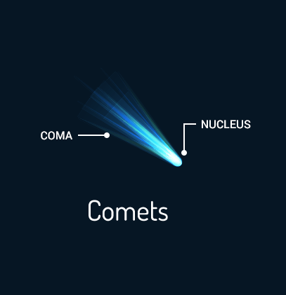

Comets Haqqında Məlumat
Finally, icy bodies and space debris fill the Oort Cloud and Kuiper Belt at the edge of the solar system. The Oort Cloud and Kuiper Belt are at the edge of the solar system where most comets reside. This collection of icy objects was caught in the sun’s gravitational pull. But they haven’t had the chance to interact and evolve like objects closer to the Sun. Location: Oort Cloud Solar System Count: 6339 Temperature: -220°C These balls of frozen gases mixed with pieces of rocks, water, and ice orbit around the solar system about 150 million kilometers away. At the edge of the solar system, this is where we draw the line.
Şəkil

